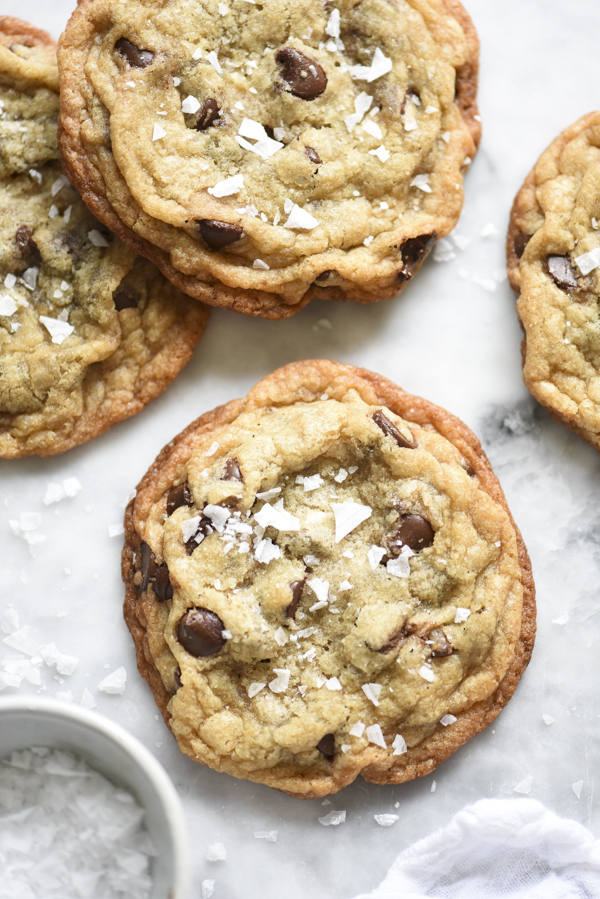

Salted Chcolate Chip Cookies

Description
This American Dessert takes 10 minutes to prep, 10 minutes to cook, makes 15 services, and is estimated to be 370 kcal per serving. To make the cookies extra delicious, one should scoop and refrigerate the dough overnight on a baking sheet.
Ingredients
- 1/2 pound (2 sticks) unsalted butter, melted and just warm to touch
- 3/4 cup packed light brown sugar
- 1/2 cup granulated sugar
- 1 egg
- 2 teaspoons vanilla extract
- 1 and 3/4 cups all-purpose flour
- 2 tbsp nonfat milk powder
- 1 and 1/4 teaspon kosher salt
- 1/2 teaspoon baking powder
- 1/4 teaspoon baking soda
- 12 oz semisweet chocolate chips or dark chcolate bar, chopped
- 1/4 cup flaked salt
Instructions
- Preheat the oven to 375 degrees F.
- With a wooden spoon, mix the sugars together in a large bowl and add the melted butter. Stir vigorously for about a minute or more until the mixture takes on a satiny texture. Mix the egg and vanilla in the measuring cup you used for the sugar and add to the mixture. Stir until the mix gathers a glossy sheen, about 1 more minute.
- Mix in the flour, milk powder, salt, baking powder, and baking soda until just combined. Stir in the choclate chips and mix until evenly distributed.
- Use a #24 squeeze hand scoop to portion the dough (or lightly form into balls about the size of a golf ball and place on a baking tray lined with parchment paper about 2 to 3 inches apart.
- Bake for 9-11 minutes or until golden brown around the dges but still soft in the middle. The cookies will fall as they cool. Transfer to a cookling rack to cool completely.